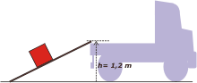
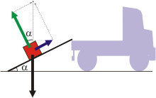
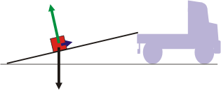

NO ME SALEN
PROBLEMAS RESUELTOS DE FÍSICA DEL CBC
(Leyes de conservación, trabajo, energía mecánica)
|
|

|
 |
2.11- Una maquinaria de 2800 N de peso, es
elevada a un camión de 1,2 m de altura mediante
un plano inclinado de 3 m de longitud. Si se
desprecian las fuerzas de roce, el trabajo realizado
es de:
a) 3360 J b) 336 J
c) 8400 J d) 840 J
e) ninguna de los anteriores |
|
Qué lindo problema: fácil, recontra súper archi mega fácil... pero enormemente aleccionador. La cuestión es que hay unas 126 formas distintas, más o menos, de resolverlo. Si no estás familiarizado con las estrategias de leyes de conservación seguramente vas a resolver el problema por alguna vía larga y laboriosa. Si estás familiarizado, en cambio, sale en menos de un pestañeo.
Te propongo lo siguiente: yo lo resuelvo del modo más económico, pero vos después te tomás el trabajo de leer e interpretar toda la discusión que le sigue... ¿hacemos el trato?
Mirá el esquema: |
|  |
Ahí está nuestro camioncito que tiene la caja a 1,2 m de altura. La maquinaria está embalada en esa caja roja y el plano inclinado es ese tablón negro que mide 3 metros que los operarios llevan en la caja del camión y lo usan para subir cosas pesadas haciendo un trabajo por el que cobran su salario, con el que alimentan a sus hijos y le compran flores a... Perdón. |
 |
Mirá, te hice un DCL para aclarar la cuestión un poco más. Ahí figura el peso de la maquinaria, P, de 2800 N, 280 kgf, subir eso es un bardo. Pero también está N, que te podría decir que es "la parte del peso que se banca el tablón", y está F, que es la fuerza que tienen que hacer los operarios... y toda esa historia romántica que no me dejás contarte. |
WFnc = ΔEM
La única fuerza no conservativa es la de los operarios, cuyo trabajo es el que le interesa al enunciado del problema, y la variación de energía mecánica es puramente potencial porque a los operarios no les interesa dejar el paquete en movimiento, sólo depositarlo arriba del camión. Luego:
WF = ΔEPG
WF = m g Δh
WF = 280 kg 10 m/s² 1,2 m
|
| |
WF = 3.360 J |
respuesta a) |
|
DISCUSION: fijate que para resolver el problema no utilicé el dato de los 3 m del largo del tablón, ni el ángulo que forma con la horizontal, ni el valor de la fuerza F que hacen los operarios, ni el trabajo de esa fuerza como resultado de la definición operativa de trabajo... ni ningún otro cálculo de los 125 que podría haber planteado para resolver el asunto.
Si vos lo resolvés por otra vía está bien igual... es así como se aprende y se gana experiencia. Tal vez te surjan preguntas interesantes como... ¿y si ricuti lo resolvió sin utilizar los 3 m... será que el resultado no depende del largo del plano? Pregunta harto interesante. Cuya respuesta es NO, si el tablón hubiese sido de 2 metros el trabajo hubiese sido el mismo. ¿Entonces para qué llevan un tablón tan largo?
Mirá bien el esquema, le agregué algunos detalles. |
|  |
Cuanto más largo sea el tablón, menor será el ángulo que forma con la horizontal. Y también menor será la fuerza que tienen que hacer los operarios...
F = P sen α
(Subiendo la caja despacio, como corresponde). |
| Cuanto más largo sea el tablón de los operarios menor será la fuerza que tiene que hacer, más fácil será su trabajo. El plano inclinado es uno de los inventos de los que la humanidad debe sentirse más orgullosa, y generalmente lo ignora. |
|  |
Que el salario de los operarios sea malo no quiere decir que sean tontos.
DESAFIO: ¿Cuánto vale el trabajo de la fuerza peso durante el proceso de subida? |
|
|
 |
|
|
| Algunos derechos reservados.
Se permite su reproducción citando la fuente. Los infractores de esta condición serán penalizados con una clase de 4 horas sobre epistemología de la interpretación de los sueños: pruebas irrefutables sobre la existencia de la madre. Última actualización nov-06. Buenos Aires, Argentina. |
|
|
|